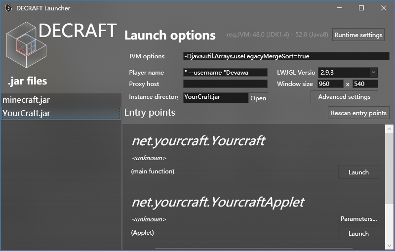

Download
Reminder: this version is not to be disclosed; any recordings and/or screenshots outside of the bug tracker and QQ group are prohibited.
Install this needs to download both launcher and jar then open launcher will automatically create a folder called "jars", then put jar into that folder! Offical Launcher is still under development.
Latest version: Classic 0.3_01
Download the launcher here.
It can't automatically receive the latest updates. So, install the update manually. Manual download Old Versions
Because some bug that doesn't know how to fix right now, player name in launcher must be set like '" --username "yourname' or game will not detect your name. Get key just need to use yourname in that because game get name is that!
It should looks like this!
